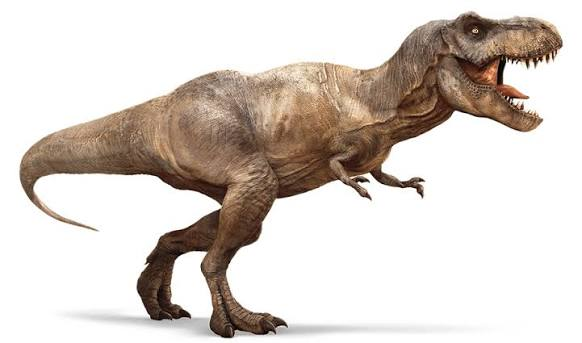

Динозаври - це група рептилій, які існували мільйони років тому. Вони були різноманітними за розміром та формою, і деякі з них були дуже великими, тоді як інші були маленькими та швидкими. Динозаври жили на всіх континентах і займали різні екологічні ніші. Найвідоміший серез них є Тиранозавр. Його фото шижче

У нас є рідке відео, де він танцює
Для будь-якого натурального числа n > 2 рівняння a n+bn=cn не має рішень при ненульових цілих числах a, b, c.
| Валюта | Купівля | Продаж |
|---|---|---|
| USD | 44,65454 | 45,17574 |
| EUR | 50,11228 | 50,80174 |
| PLN | 11,19333 | 0,59874 |